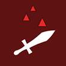

Czym są runy?
Runy są przedmoitami, które modyfikują nasze statystyki po podniesieniu. Kazdy z graczy może podnieść maksymalnie 6 run w ciągu jednej gry. Runy wypadają ze skrzynek, zrzutów oraz goblinów jednak nie wypadają z innych graczy nawet gdy mają oni 6 run przy sobie, można je także wykuć w kuźni za 60 odłamków.
Runy są przedmiotami o epickiej rzadkości, po rozmianie otrzymujemy z nich 20 odłamków.
Lista run dostępnych w grze
Poniżej znajduję się tabelka ze wszystkimi runami dostępnymi w grze.
| + 15% kardzieży życia | |
|  | + 15% do wszystkich zadawanych obrażeń |
| Przeładowanie broni jest 2 razy szybsze | |
| Odnawiasz 10 punktów pancerza na sekundę |